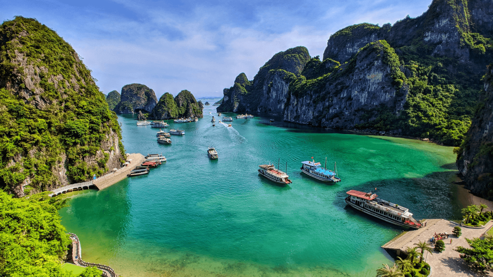

.png)
Nước Cộng hoà Xã hội chủ nghĩa Việt Nam là một dải đất hình chữ S, nằm ở trung tâm khu vực Đông Nam Á, ở phía đông bán đảo Đông Dương, phía bắc giáp Trung Quốc, phía tây giáp Lào, Campuchia, phía đông nam trông ra biển Đông và Thái Bình Dương. Bờ biển Việt Nam dài 3 260 km, biên giới đất liền dài 4 510 km. Trên đất liền, từ điểm cực Bắc đến điểm cực Nam (theo đường chim bay) dài 1 650km, từ điểm cực Đông sang điểm cực Tây nơi rộng nhất 600km (Bắc bộ), 400 km (Nam bộ), nơi hẹp nhất 50km (Quảng Bình).Việt Nam có 63 tỉnh và thành phố.
Khí hậu: Việt Nam là nước nhiệt đới gió mùa; Trải dài xuôi về Xích Đạo nhưng Việt Nam lại có những điều kiện tự nhiên khí hậu và gió mùa khác biệt giữa đôi miền Nam Bắc. Một mùa đông lạnh ẩm đặc trưng miền Bắc trái chiều với không khí đón Tết đến xuân về ấm nóng ở trong Nam.
Tài nguyên: Lãnh thổ Việt Nam bao gồm 3 phần 4 là đồi núi. Việt Nam có nguồn tài nguyên vô cùng phong phú như: tài nguyên rừng, tài nguyên thủy hải sản, tài nguyên du lịch và nhiều loại khoáng sản đa dạng.
Văn hóa: Với 54 dân tộc anh em, đất nước Việt Nam có nền văn hóa đa dạng và phong phú từ miền Bắc đến miền Nam. Sự đa dạng và phong phú thế hiện qua từng con người, từng vùng, từng địa phương. Đất nước Việt Nam tự hào khi có rất nhiều di sản văn hóa phi vật thể về các loại nghệ thuật đặc trưng của từng vùng và từng thời kỳ trong lịch sử.
Việt Nam là đất nước tươi đẹp gồm rất nhiều danh lam thắm cảnh nổi tiếng được UNESCO công nhận, đặc biệt Vịnh Hạ Long của Việt Nam được công nhận làm 1 trong 7 kỳ quan thiên nhiên thế giới mới vào ngày 11/11/2011.
Tổng quan về Du lịch Việt Nam
Việt Nam là một quốc gia có tiềm năng du lịch đa dạng và phong phú với nhiều thế mạnh:
Người Việt Nam trong mắt du khách quốc tế
Việt Nam có thiên nhiên và cảnh đẹp. Ở đất nước hình chữ S này, đâu đâu cũng là điểm đến lý tưởng cho du khách Quốc tế tham quan và nghỉ dưỡng. Những vị khách nước ngoài rất thích đến đây không chỉ chiêm ngưỡng cảnh đẹp, thưởng thức món ăn ngon...mà sự hiếu khách, chân thành và nhiều nét đẹp, truyền thống đặc sắc của người Việt giống như sức hút vô hình.
Không có gì lạ nếu bạn thấy một nhóm khách du lịch được mời vào nhà dùng cơm với người địa phương. Đặc biệt trong những lễ hội, bạn có thể được người dân đãi những món ăn ngon, tham gia tiệc đến tận đêm muộn. Đây là điều người Việt luôn tạo ấn tượng tốt cho du khách quốc tế.
Nhiều bạn bè quốc tế chia sẻ rằng người dân trên mảnh đất hình chữ S tự hào với lịch sử của mình, đồng thời luôn khát vọng về sự thịnh vượng trong thời bình. Sự lạc quan, bền bỉ là một trong những điều khiến họ yêu mến ở người Việt.
Di sản Việt Nam
Cả nước có hơn 40.000 di tích và thắng cảnh, trong đó hơn 3.000 di tích được xếp hạng di tích quốc gia, 5.000 di tích được xếp hạng cấp tỉnh. Đồng bằng sông Hồng là khu vực có mật độ và số lượng di tích chiếm nhiều nhất với tỷ lệ lên đến 70%. Ngoài ra, tính trên địa bàn toàn quốc thì Việt Nam còn có 117 bảo tàng – nơi lưu giữ quá trình lịch sử hào hùng của dân tộc.
Việt Nam là một trong những số ít quốc gia trên thế giới được UNESCO công nhận nhiều di sản đến vậy. Tính đến nay, nước ta đã có 8 di sản được UNESCO công nhận: Di tích Hoàng thành Thăng Long, phố cổ Hội An, quần thể danh thắng Tràng An, cố đô Huế, thành nhà Hồ, thánh địa Mỹ Sơn, vườn quốc gia Phong Nha – Kẻ Bàng, vịnh Hạ Long. Đây là một trong những tiềm năng du lịch Việt Nam thu hút khách quốc tế.
Các di sản này không chỉ là minh chứng cho một đất nước Việt Nam tươi đẹp, đa dạng về phong cảnh thiên nhiên; phong phú về bản sắc văn hóa dân tộc; có bề dày lịch sử mà còn là những điểm đến thu hút nhiều du khách trong nước và quốc tế đến tham quan mỗi năm.
Vịnh Hạ Long là một trong những di sản thu hút khách du lịch quốc tế bậc nhất nước ta
Danh lam thắng cảnh
Việt Nam đã được UNESCO công nhận 8 khu dự trữ sinh quyển thế giới, bao gồm: Châu thổ sông Hồng, Cát Bà, Tây Nghệ An, Đồng Nai, Cù Lao Chàm, Cần Giờ, Cà Mau và biển Kiên Giang. Có thể ví von nước ta có cả “rừng vàng – biển bạc”. Không chỉ lớn mạnh ở tiềm năng phát triển du lịch biển Việt Nam mà ở đồng bằng, miền núi và trung du nước ta cũng sở hữu vô vàn các thắng cảnh “gây nhớ thương” cho khách du lịch.
Tiềm năng phát triển du lịch biển Việt Nam được minh chứng rõ nhất vào hè – thời điểm nhu cầu tắm mát tăng cao. Trong khi đó, mùa thu – đông và xuân ở các miền núi như Tây Bắc, Tây Nguyên lại hấp dẫn thực khách bởi những mùa hoa và không gian lãng mạn thơ tình. Một số địa điểm tham quan đẹp ở các tỉnh miền núi tại Việt Nam: Mộc Châu mùa hoa cải hoa mận, Đà Lạt đồi cỏ hồng chớm đông, Tây Bắc mùa lúa chín, Gia Lai mùa hoa muồng rực vàng…

“Mùa vàng” về trên Tây Bắc
Đất nước Việt Nam đang trở thành một trong những điểm đến hàng đầu thế giới nhờ vẻ đẹp thiên nhiên tuyệt vời. Cảnh đẹp Việt Nam từ Bắc vào Nam có thể nói là vô tận, từ những cánh đồng lúa và ruộng bậc thang xanh tươi ở phía Bắc đến sự nhộn nhịp của đồng bằng sông Cửu Long ở phía Nam.
Văn hóa và Ẩm thực
Mỗi khi nhắc đến đất nước Việt Nam xinh đẹp thì ẩm thực luôn là một đề tài thú vị. Ẩm thực của người Việt không chỉ là những món ăn, công thức chế biến mà đây là một nét văn hóa tự nhiên hình thành trong cuộc sống. Chúng được biết đến với những nét đặc trưng như: tính hòa đồng, đa dạng, ít mỡ; đậm đà hương vị với sự kết hợp nhuần nhuyễn nhiều loại nguyên liệu và gia vị khác nhau nhằm giúp tăng mùi vị, sức hấp dẫn trong từng món ăn.
Văn hóa và Ẩm thực chính là hai trong các tiềm năng du lịch cần được gìn giữ và phát triển. Việt Nam có 54 dân tộc anh em, mỗi vùng miền, mỗi dân tộc đều có bản sắc văn hóa, phong tục tập quán, lối sống riêng khác nhau tạo thành nét cuốn hút riêng. Không chỉ vậy, Việt Nam còn có di sản văn hóa phi vật thể nổi tiếng: Nhã nhạc cung đình Huế, không gian văn hóa cồng chiêng Tây Nguyên, ca trù, quan họ, hát xoan, hội Gióng, tín ngưỡng thờ cúng Hùng Vương (10/03 Âm lịch)… để thu hút khách du lịch.
Chính nhờ sự đa dạng trong văn hóa dân tộc nên Ẩm thực ở nước ta cũng phong phú chẳng kém. Việt Nam đã vinh dự lọt vào Top 15 quốc gia có nền ẩm thực đường phố hấp dẫn nhất thế giới. Một số món ăn Việt được bạn bè quốc tế yêu thích như: Phở, bánh mì, bún bò Huế…
Với một đất nước có chiều dài lịch sử lâu đời và vị trí địa lý khác biệt, thì mỗi một vùng miền trên dải đất hình chữ S này lại có những món ăn đặc trưng, những món đặc sản riêng biệt không thể hòa lẫn.